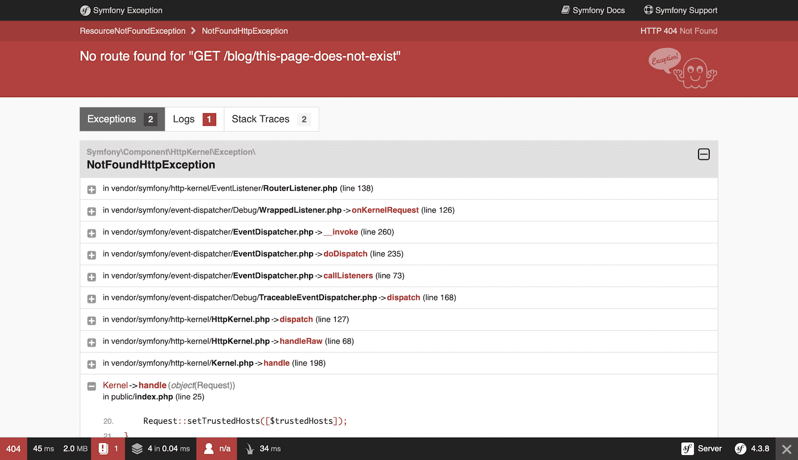
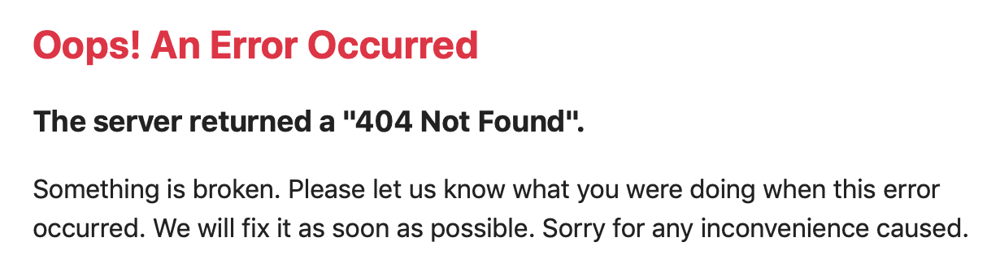

How to Customize Error Pages¶
In Symfony applications, all errors are treated as exceptions, no matter if they are a 404 Not Found error or a fatal error triggered by throwing some exception in your code.
In the development environment, Symfony catches all the exceptions and displays a special exception page with lots of debug information to help you discover the root problem:
Since these pages contain a lot of sensitive internal information, Symfony won’t display them in the production environment. Instead, it’ll show a minimal and generic error page:
Error pages for the production environment can be customized in different ways depending on your needs:
- If you only want to change the contents and styles of the error pages to match the rest of your application, override the default error templates;
- If you want to change the contents of non-HTML error output, create a new normalizer;
- If you also want to tweak the logic used by Symfony to generate error pages, override the default error controller;
- If you need total control of exception handling to run your own logic use the kernel.exception event.
Overriding the Default Error Templates¶
You can use the built-in Twig error renderer to override the default error templates. Both the TwigBundle and TwigBridge need to be installed for this. Run this command to ensure both are installed:
1 | $ composer require symfony/twig-pack
|
When the error page loads, TwigErrorRenderer
is used to render a Twig template to show the user.
This renderer uses the HTTP status code and the following logic to determine the template filename:
- Look for a template for the given status code (like
error500.html.twig); - If the previous template doesn’t exist, discard the status code and look for
a generic error template (
error.html.twig).
To override these templates, rely on the standard Symfony method for
overriding templates that live inside a bundle and
put them in the templates/bundles/TwigBundle/Exception/ directory.
A typical project that returns HTML pages might look like this:
1 2 3 4 5 6 7 | templates/
└─ bundles/
└─ TwigBundle/
└─ Exception/
├─ error404.html.twig
├─ error403.html.twig
└─ error.html.twig # All other HTML errors (including 500)
|
Example 404 Error Template¶
To override the 404 error template for HTML pages, create a new
error404.html.twig template located at templates/bundles/TwigBundle/Exception/:
1 2 3 4 5 6 7 8 9 10 11 | {# templates/bundles/TwigBundle/Exception/error404.html.twig #}
{% extends 'base.html.twig' %}
{% block body %}
<h1>Page not found</h1>
<p>
The requested page couldn't be located. Checkout for any URL
misspelling or <a href="{{ path('homepage') }}">return to the homepage</a>.
</p>
{% endblock %}
|
In case you need them, the TwigErrorRenderer passes some information to
the error template via the status_code and status_text variables that
store the HTTP status code and message respectively.
Tip
You can customize the status code of an exception by implementing
HttpExceptionInterface
and its required getStatusCode() method. Otherwise, the status_code
will default to 500.
Additionally you have access to the Exception with exception, which for example
allows you to output the stack trace using {{ exception.traceAsString }} or
access any other method on the object. You should be careful with this though,
as this is very likely to expose sensitive data.
Tip
PHP errors are turned into exceptions as well by default, so you can also
access these error details using exception.
Security & 404 Pages¶
Due to the order of how routing and security are loaded, security information will not be available on your 404 pages. This means that it will appear as if your user is logged out on the 404 page (it will work while testing, but not on production).
Testing Error Pages during Development¶
While you’re in the development environment, Symfony shows the big exception page instead of your shiny new customized error page. So, how can you see what it looks like and debug it?
Fortunately, the default ErrorController allows you to preview your
error pages during development.
To use this feature, you need to load some special routes provided by FrameworkBundle
(if the application uses Symfony Flex they are loaded
automatically when installing symfony/framework-bundle):
- YAML
1 2 3 4
# config/routes/dev/framework.yaml _errors: resource: '@FrameworkBundle/Resources/config/routing/errors.xml' prefix: /_error
- XML
1 2 3 4 5 6 7 8 9
<!-- config/routes/dev/framework.xml --> <?xml version="1.0" encoding="UTF-8" ?> <routes xmlns="http://symfony.com/schema/routing" xmlns:xsi="http://www.w3.org/2001/XMLSchema-instance" xsi:schemaLocation="http://symfony.com/schema/routing https://symfony.com/schema/routing/routing-1.0.xsd"> <import resource="@FrameworkBundle/Resources/config/routing/errors.xml" prefix="/_error"/> </routes>
- PHP
1 2 3 4 5 6 7 8
// config/routes/dev/framework.php use Symfony\Component\Routing\Loader\Configurator\RoutingConfigurator; return function (RoutingConfigurator $routes) { $routes->import('@FrameworkBundle/Resources/config/routing/errors.xml') ->prefix('/_error') ; };
With this route added, you can use URLs like these to preview the error page for a given status code as HTML or for a given status code and format.
1 2 | http://localhost/index.php/_error/{statusCode}
http://localhost/index.php/_error/{statusCode}.{format}
|
Overriding Error output for non-HTML formats¶
To override non-HTML error output, the Serializer component needs to be installed.
1 | $ composer require symfony/serializer-pack
|
The Serializer component has a built-in FlattenException normalizer
(ProblemNormalizer) and
JSON/XML/CSV/YAML encoders. When your application throws an exception, Symfony
can output it in one of those formats. If you want to change the output
contents, create a new Normalizer that supports the FlattenException input:
# src/Serializer/MyCustomProblemNormalizer.php
namespace App\Serializer;
use Symfony\Component\ErrorHandler\Exception\FlattenException;
use Symfony\Component\Serializer\Normalizer\NormalizerInterface;
class MyCustomProblemNormalizer implements NormalizerInterface
{
public function normalize($exception, string $format = null, array $context = [])
{
return [
'content' => 'This is my custom problem normalizer.',
'exception'=> [
'message' => $exception->getMessage(),
'code' => $exception->getStatusCode(),
],
];
}
public function supportsNormalization($data, string $format = null)
{
return $data instanceof FlattenException;
}
}
Overriding the Default ErrorController¶
If you need a little more flexibility beyond just overriding the template, then you can change the controller that renders the error page. For example, you might need to pass some additional variables into your template.
To do this, create a new controller anywhere in your application and set the framework.error_controller configuration option to point to it:
- YAML
1 2 3
# config/packages/framework.yaml framework: error_controller: App\Controller\ErrorController::show
- XML
1 2 3 4 5 6 7 8 9 10 11 12
<!-- config/packages/framework.xml --> <?xml version="1.0" encoding="UTF-8" ?> <container xmlns="http://symfony.com/schema/dic/services" xmlns:xsi="http://www.w3.org/2001/XMLSchema-instance" xsi:schemaLocation="http://symfony.com/schema/dic/services https://symfony.com/schema/dic/services/services-1.0.xsd"> <framework:config> <framework:error-controller>App\Controller\ErrorController::show</framework:error-controller> </framework:config> </container>
- PHP
1 2 3 4 5
// config/packages/framework.php $container->loadFromExtension('framework', [ 'error_controller' => 'App\Controller\ErrorController::show', // ... ]);
The ErrorListener
class used by the FrameworkBundle as a listener of the kernel.exception event creates
the request that will be dispatched to your controller. In addition, your controller
will be passed two parameters:
exception- The original
Throwableinstance being handled. logger- A
DebugLoggerInterfaceinstance which may benullin some circumstances.
Tip
The error page preview also works for your own controllers set up this way.
Working with the kernel.exception Event¶
When an exception is thrown, the HttpKernel
class catches it and dispatches a kernel.exception event. This gives you the
power to convert the exception into a Response in a few different ways.
Working with this event is actually much more powerful than what has been explained before, but also requires a thorough understanding of Symfony internals. Suppose that your code throws specialized exceptions with a particular meaning to your application domain.
Writing your own event listener
for the kernel.exception event allows you to have a closer look at the exception
and take different actions depending on it. Those actions might include logging
the exception, redirecting the user to another page or rendering specialized
error pages.
Note
If your listener calls setThrowable() on the
ExceptionEvent,
event, propagation will be stopped and the response will be sent to
the client.
This approach allows you to create centralized and layered error handling: instead of catching (and handling) the same exceptions in various controllers time and again, you can have just one (or several) listeners deal with them.
Tip
See ExceptionListener
class code for a real example of an advanced listener of this type. This
listener handles various security-related exceptions that are thrown in
your application (like AccessDeniedException)
and takes measures like redirecting the user to the login page, logging them
out and other things.